Negro, blanco y un solo rojo
Un único color de acento (#E10000) guía la mirada hacia lo accionable: botones, foco y datos clave. Lo demás es escala de grises con contraste alto.
SECCIÓN_06 / PROCESO
Decisiones de diseño, decisiones de arquitectura, el historial de commits e instrucciones dadas a la IA.
/ Diseño
Un único color de acento (#E10000) guía la mirada hacia lo accionable: botones, foco y datos clave. Lo demás es escala de grises con contraste alto.
Archivo (titulares, ancho variable) para la personalidad; IBM Plex Sans para leer; IBM Plex Mono para etiquetas y datos, que evocan la terminal y la computación de bajo nivel.
La rejilla de fondo en el hero muestra la estructura, como un plano técnico. Refuerza la idea «entender cómo está construido».
La máquina de escribir y la consola aluden a la terminal; los contadores y el radar solo se animan al entrar en pantalla. Todo se apaga con «reducir movimiento».
El oscuro es la marca; el claro ayuda a leer con mucha luz para los que se quieran quedar ciegos. La preferencia se guarda y se aplica antes de pintar para evitar parpadeos.
Enlace «saltar al contenido», foco visible, aria-live en formularios y chat, textos alternativos y estructura de encabezados coherente.
Contexto: es un portfolio de contenido, no una aplicación con estado complejo. Decisión: HTML semántico, CSS con variables y JavaScript vanilla. Consecuencias: cero dependencias que actualizar, carga rápida y todo el código es explicable; a cambio, la cabecera y el pie se repiten en cada página.
Decisión: separar por responsabilidad (tema, contacto, GitHub, chatbot, zona…) con import/export y un único punto de entrada js/main.js. Consecuencias: cada módulo se entiende y se prueba por separado, y un fallo no tumba el resto (función safe()).
Contexto: no hay servidor propio. Decisión: envío por fetch a Formspree como canal principal, issue etiquetado en GitHub como alternativa y mailto como plan B. Consecuencias: el mensaje siempre tiene una vía, pero dependemos de un tercero; el issue es público, por eso no incluye el correo.
Contexto: una clave de API en el navegador queda expuesta. Decisión: motor de reglas con palabras clave y habilidades (conversor, hora). Consecuencias: gratis, rápido y explicable; no entiende preguntas fuera de su base de conocimiento. Camino de mejora: backend intermedio que guarde la clave.
Contexto: una web estática no puede proteger nada de verdad. Decisión: demostrar el flujo (login, sesión, zona, logout) con SHA-256 + sal mediante Web Crypto, caducidad y bloqueo por intentos. Consecuencias: valida el diseño del flujo, pero la seguridad real exigiría servidor.
Contexto: Three.js pesa mucho y penaliza el rendimiento. Decisión: importar globex.js dinámicamente solo cuando el globo va a entrar en pantalla. Consecuencias: mejor tiempo de carga inicial en todas las páginas.
Contexto: El rendimiento en la carga de las páginas web es un factor muy relevante a tener en cuenta. Decisión: optimizar los contenidos multimedia para acelerar al máximo la velocidad de carga. Consecuencias: la web tiene una marca de 99 al medir el Lighthouse
Leído de la API de GitHub. Los primeros commits son de mi etapa de aprendizaje y llevan mensajes cortos; a partir de la v3 el objetivo es que cada mensaje explique la decisión, no solo el «cambio».

Órdenes a la IA archivadas Issues y tablero